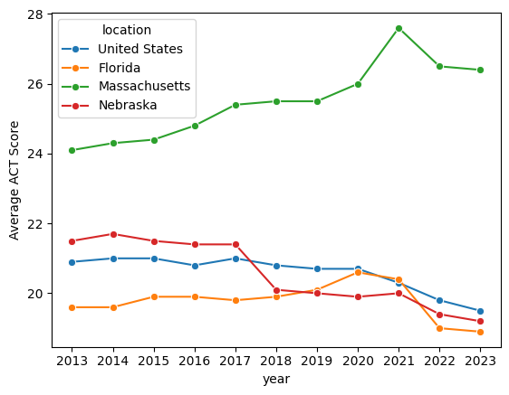
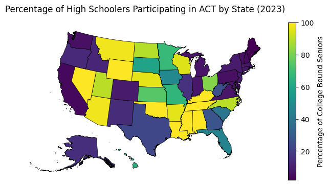
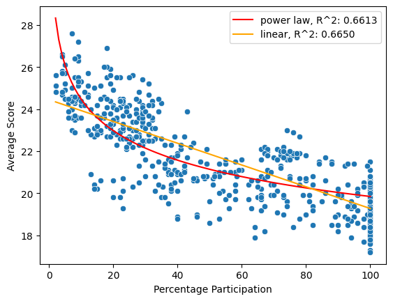
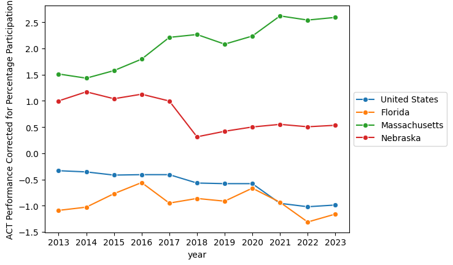
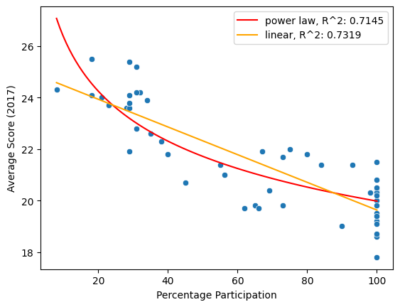
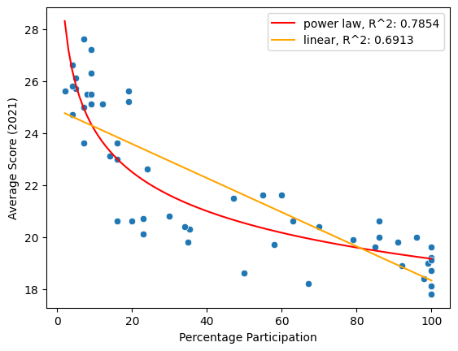
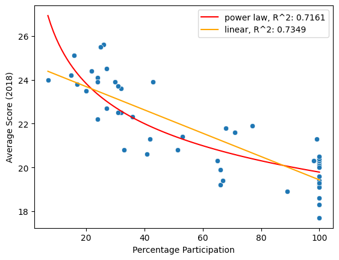
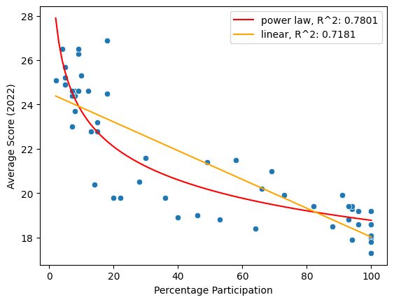

import pandas as pd
import seaborn as sns
import matplotlib.pyplot as plt
import sys
sys.path.insert(1, "../")Appedix
import utils.us_map
import utils.anomaly as anomaly
import utils.scores as scores
states = utils.us_map.main("../data/cb_2018_us_state_500k")paths = ['../data/act/tabn226.60_2013_2017.xlsx',
'../data/act/tabn226.60_2014_2018.xlsx',
'../data/act/tabn226.60_2015_2019.xlsx',
'../data/act/tabn226.60_2016_2020.xlsx',
'../data/act/tabn226.60_2017_2021.xlsx',
'../data/act/tabn226.60_2018_2022.xlsx',
'../data/act/tabn226.60_2018_2023.xlsx']objs = [scores.ACTScores(path) for path in paths]
objs[0].df = objs[0].df.query("year==2013")
objs[1].df = objs[1].df.query("year==2014")
act_scores = scores.Scores()
for obj in objs:
act_scores = act_scores.merge(obj)
act_scores.df.head()| location | year | percent | section | mean | test | |
|---|---|---|---|---|---|---|
| 0 | United States | 2013 | 51.731715 | composite | 20.9 | ACT |
| 1 | Alabama | 2013 | 78.000000 | composite | 20.4 | ACT |
| 2 | Alaska | 2013 | 37.000000 | composite | 21.1 | ACT |
| 3 | Arizona | 2013 | 50.000000 | composite | 19.6 | ACT |
| 4 | Arkansas | 2013 | 90.000000 | composite | 20.2 | ACT |
demonstration_locals = ["Nebraska",
"Massachusetts", "Florida", "United States"]
(states.merge(act_scores.get_section("composite").get_year(2023).df,
left_on="NAME",
right_on="location")
.plot(column="mean",
legend=True,
cmap="inferno",
edgecolor="black",
figsize=(8, 8),
lw=0.5,
legend_kwds={"label": "Average SAT Score",
"shrink": 0.5}))
plt.axis("off")
plt.title("Average ACT Score by State (2023)")
plt.show()
act_scores_df = act_scores.get_section(
"composite").get_states(demonstration_locals).df
sns.lineplot(data=act_scores_df,
x="year",
y="mean",
hue="location",
marker="o")
plt.ylabel("Average ACT Score")
plt.xticks(range(act_scores_df["year"].min(), act_scores_df["year"].max()+1))
plt.show()
(states.merge(act_scores.get_section("composite").get_year(2023).df,
left_on="NAME",
right_on="location")
.plot(column="percent",
legend=True,
edgecolor="black",
figsize=(8, 8),
lw=0.5,
legend_kwds={"label": "Percentage of College Bound Seniors", "shrink": 0.5}))
plt.axis("off")
plt.title("Percentage of High Schoolers Participating in ACT by State (2023)")
plt.show()
act_scores_df = act_scores.get_section("composite").df
anomaly.anomaly(act_scores_df, separate_years=False)
act_corrected_scores = anomaly.anomaly(
act_scores_df, separate_years=True, suppress=True)
plaw_scores = act_corrected_scores.assign(
anom_c=act_corrected_scores["mean"]-act_corrected_scores["plaw_pred"])
(states.merge(plaw_scores.query("year==2023"),
left_on="NAME",
right_on="location")
.plot(column="anom_c",
legend=True,
cmap="inferno",
edgecolor="black",
figsize=(8, 8),
lw=0.5,
legend_kwds={"label": "Percentage Corrected ACT Performance",
"shrink": 0.5}))
plt.axis("off")
plt.title("ACT Performance by State Corrected for Percentage Participation (2023)")
plt.show()
sns.lineplot(data=plaw_scores.query("location in @demonstration_locals"),
x="year",
y="anom_c",
hue="location",
marker="o")
plt.legend(loc="center left", bbox_to_anchor=(1, 0.5))
plt.ylabel("ACT Performance Corrected for Percentage Participation")
plt.xticks(range(act_scores_df["year"].min(), act_scores_df["year"].max()+1))
plt.show()
rankings = plaw_scores.pivot_table(index="location", columns="year", values="anom_c").sort_values(
2023, ascending=False).reset_index()
rankings.columns.name = "2023 Rankings"
rankings.index = rankings.index + 1
rankings.round(1)| 2023 Rankings | location | 2013 | 2014 | 2015 | 2016 | 2017 | 2018 | 2019 | 2020 | 2021 | 2022 | 2023 |
|---|---|---|---|---|---|---|---|---|---|---|---|---|
| 1 | District of Columbia | -1.3 | -0.4 | -0.9 | 0.3 | 1.3 | 1.0 | 1.2 | 1.0 | 3.0 | 4.6 | 3.9 |
| 2 | Massachusetts | 1.5 | 1.4 | 1.6 | 1.8 | 2.2 | 2.3 | 2.1 | 2.2 | 2.6 | 2.5 | 2.6 |
| 3 | Connecticut | 1.7 | 1.8 | 1.9 | 2.0 | 2.2 | 2.5 | 2.2 | 2.3 | 2.8 | 2.3 | 2.6 |
| 4 | Illinois | 0.4 | 0.4 | 0.5 | 0.8 | 1.2 | 2.1 | 2.2 | 2.4 | 2.6 | 2.2 | 2.3 |
| 5 | New York | 1.1 | 0.8 | 0.9 | 1.0 | 1.2 | 1.5 | 1.2 | 1.4 | 1.9 | 1.6 | 1.8 |
| 6 | South Dakota | 1.3 | 1.2 | 1.2 | 1.3 | 1.3 | 1.5 | 1.4 | 1.5 | 1.3 | 1.7 | 1.5 |
| 7 | Minnesota | 2.3 | 2.2 | 2.0 | 1.1 | 1.5 | 1.5 | 1.7 | 1.7 | 1.4 | 1.5 | 1.5 |
| 8 | Utah | 0.5 | 0.5 | -0.0 | 0.2 | 0.3 | 0.6 | 0.7 | 0.8 | 1.2 | 0.9 | 1.1 |
| 9 | New Jersey | 0.5 | 0.4 | 0.5 | 0.4 | 1.2 | 1.0 | 1.2 | 1.3 | 1.4 | 1.3 | 1.1 |
| 10 | Colorado | 0.2 | 0.3 | 0.5 | 0.6 | 0.8 | 1.2 | 1.0 | 0.8 | 0.6 | 0.4 | 1.0 |
| 11 | Iowa | 1.2 | 1.1 | 1.2 | 1.2 | 0.9 | 1.1 | 1.1 | 0.8 | 0.8 | 1.2 | 0.8 |
| 12 | North Dakota | 0.2 | 0.3 | 0.4 | 0.3 | 0.3 | 0.5 | 0.2 | 0.1 | 0.4 | 0.3 | 0.8 |
| 13 | Virginia | 0.3 | 0.3 | 0.4 | 0.6 | 0.6 | 0.6 | 0.6 | 0.8 | 1.1 | 0.6 | 0.8 |
| 14 | Wisconsin | 1.3 | 1.4 | 1.4 | 0.5 | 0.5 | 0.7 | 0.7 | 0.7 | 0.8 | 0.5 | 0.7 |
| 15 | Nebraska | 1.0 | 1.2 | 1.0 | 1.1 | 1.0 | 0.3 | 0.4 | 0.5 | 0.6 | 0.5 | 0.5 |
| 16 | Missouri | 0.9 | 1.1 | 1.0 | 0.2 | 0.4 | 0.2 | 0.8 | 0.7 | 0.5 | 0.6 | 0.4 |
| 17 | Wyoming | -0.4 | -0.2 | -0.0 | 0.0 | 0.2 | 0.2 | 0.2 | 0.3 | 0.5 | 0.4 | 0.4 |
| 18 | Maryland | -0.4 | -0.3 | -0.4 | -0.1 | 0.3 | -0.2 | -0.4 | 0.2 | 0.9 | 0.2 | 0.4 |
| 19 | Michigan | -0.3 | -0.2 | -0.1 | 0.3 | 0.9 | 0.8 | 0.7 | 0.7 | 0.7 | 0.4 | 0.3 |
| 20 | New Hampshire | 1.0 | 1.1 | 1.0 | 1.0 | 0.9 | 0.6 | 0.5 | 0.8 | 0.2 | 0.3 | 0.3 |
| 21 | Kansas | 1.1 | 1.2 | 1.1 | 1.2 | 0.9 | 1.0 | 0.9 | 0.5 | 0.3 | 0.5 | 0.3 |
| 22 | Ohio | 1.1 | 1.2 | 1.2 | 1.3 | 1.3 | 0.5 | 0.4 | 0.5 | 0.1 | 0.2 | 0.2 |
| 23 | Georgia | -0.6 | -0.6 | -0.3 | -0.0 | -0.1 | 0.1 | 0.2 | 0.3 | 0.5 | 0.4 | 0.2 |
| 24 | California | -0.1 | -0.1 | -0.2 | 0.0 | -0.2 | -0.3 | -0.6 | -0.3 | 0.3 | 0.5 | 0.2 |
| 25 | Montana | 0.6 | 0.2 | 0.2 | 0.3 | 0.3 | 0.2 | 0.2 | 0.5 | 0.5 | 0.4 | 0.2 |
| 26 | Idaho | 0.8 | 0.8 | 0.7 | 0.5 | -0.1 | 0.0 | 0.1 | 0.1 | -0.0 | 0.0 | 0.1 |
| 27 | Kentucky | -0.6 | -0.4 | -0.2 | 0.0 | 0.0 | 0.4 | 0.2 | 0.1 | 0.0 | -0.3 | 0.1 |
| 28 | Washington | 0.1 | 0.1 | -0.7 | -0.2 | -1.3 | -1.1 | -1.0 | -0.6 | -1.4 | 0.0 | 0.0 |
| 29 | Arkansas | -0.2 | 0.0 | 0.0 | 0.1 | -0.6 | -0.4 | -0.3 | -0.4 | -0.2 | -0.1 | -0.1 |
| 30 | Tennessee | -0.7 | -0.5 | -0.4 | -0.1 | -0.2 | -0.2 | -0.2 | -0.1 | -0.1 | -0.2 | -0.2 |
| 31 | North Carolina | -1.5 | -1.4 | -1.2 | -0.9 | -0.9 | -0.7 | -0.6 | -0.6 | -0.4 | -0.5 | -0.3 |
| 32 | Louisiana | -0.7 | -1.1 | -0.8 | -0.5 | -0.5 | -0.6 | -0.8 | -0.7 | -0.8 | -0.7 | -0.4 |
| 33 | Rhode Island | -0.6 | -0.7 | -0.6 | -0.6 | -0.1 | -0.5 | -0.3 | -0.4 | -0.6 | -0.2 | -0.4 |
| 34 | Pennsylvania | -0.2 | -0.5 | -0.5 | -0.4 | -0.1 | -0.3 | -0.4 | -0.6 | 0.0 | -0.2 | -0.6 |
| 35 | Alabama | -0.2 | -0.0 | -1.1 | -0.9 | -0.8 | -0.7 | -0.7 | -0.6 | -0.5 | -0.8 | -0.6 |
| 36 | Delaware | -0.3 | -0.1 | 0.0 | -0.1 | -0.5 | -0.5 | -0.7 | -1.0 | -0.1 | -0.5 | -0.7 |
| 37 | Oklahoma | 0.1 | -0.1 | 0.1 | -0.0 | -0.6 | -0.5 | -0.7 | -0.7 | -0.5 | -1.0 | -0.8 |
| 38 | Vermont | 0.7 | 0.8 | 0.8 | 0.5 | 0.4 | 0.8 | 0.6 | 0.2 | -1.7 | -0.5 | -0.9 |
| 39 | Indiana | -0.0 | 0.0 | 0.1 | 0.2 | -0.1 | -0.1 | -0.1 | -0.3 | -0.2 | -0.3 | -0.9 |
| 40 | West Virginia | -0.3 | -0.4 | -0.2 | -0.2 | -0.5 | -0.5 | -0.4 | -0.9 | -0.8 | -0.9 | -0.9 |
| 41 | Arizona | -1.7 | -1.6 | -1.5 | -1.1 | -1.5 | -1.6 | -1.3 | -1.1 | -1.5 | -1.2 | -0.9 |
| 42 | United States | -0.3 | -0.4 | -0.4 | -0.4 | -0.4 | -0.6 | -0.6 | -0.6 | -1.0 | -1.0 | -1.0 |
| 43 | Mississippi | -1.4 | -1.3 | -1.2 | -1.6 | -1.4 | -1.2 | -1.2 | -1.2 | -1.1 | -1.0 | -1.0 |
| 44 | Florida | -1.1 | -1.0 | -0.8 | -0.6 | -1.0 | -0.9 | -0.9 | -0.7 | -0.9 | -1.3 | -1.2 |
| 45 | Nevada | -0.7 | -0.8 | -1.1 | -2.3 | -2.2 | -2.1 | -1.7 | -1.5 | -1.4 | -1.5 | -1.4 |
| 46 | Hawaii | -1.5 | -2.3 | -1.9 | -1.4 | -1.2 | -1.2 | -1.1 | -1.4 | -1.7 | -1.2 | -1.5 |
| 47 | South Carolina | -0.9 | -0.8 | -0.8 | -1.5 | -1.3 | -1.5 | -1.3 | -1.6 | -1.9 | -1.7 | -1.5 |
| 48 | Oregon | -0.4 | -0.6 | -0.7 | -0.5 | -0.5 | -0.6 | -0.5 | -0.5 | -1.9 | -1.6 | -1.8 |
| 49 | Texas | -0.9 | -1.0 | -1.1 | -1.2 | -1.3 | -1.3 | -1.3 | -1.6 | -2.1 | -2.1 | -2.2 |
| 50 | Alaska | -0.7 | -1.0 | -1.0 | -1.4 | -1.2 | -1.7 | -1.8 | -2.0 | -2.4 | -2.5 | -2.2 |
| 51 | New Mexico | -0.9 | -1.0 | -0.8 | -0.9 | -1.3 | -1.3 | -1.3 | -1.5 | -1.5 | -2.3 | -2.3 |
| 52 | Maine | -0.8 | -1.1 | -1.0 | -2.2 | -2.8 | -2.9 | -2.7 | -2.8 | -2.7 | -2.8 | -2.5 |
anomaly.anomaly(act_scores_df, separate_years=True)| location | year | percent | section | mean | test | lin_pred | plaw_pred | |
|---|---|---|---|---|---|---|---|---|
| 0 | United States | 2013 | 51.731715 | composite | 20.9 | ACT | 21.558710 | 21.232126 |
| 1 | Alabama | 2013 | 78.000000 | composite | 20.4 | ACT | 20.683361 | 20.610784 |
| 2 | Alaska | 2013 | 37.000000 | composite | 21.1 | ACT | 22.049621 | 21.753109 |
| 3 | Arizona | 2013 | 50.000000 | composite | 19.6 | ACT | 21.616417 | 21.284478 |
| 4 | Arkansas | 2013 | 90.000000 | composite | 20.2 | ACT | 20.283479 | 20.398556 |
| ... | ... | ... | ... | ... | ... | ... | ... | ... |
| 99 | Virginia | 2023 | 8.000000 | composite | 24.6 | ACT | 23.716262 | 23.806714 |
| 100 | Washington | 2023 | 6.000000 | composite | 24.5 | ACT | 23.840851 | 24.486780 |
| 101 | West Virginia | 2023 | 26.000000 | composite | 20.3 | ACT | 22.594961 | 21.212074 |
| 102 | Wisconsin | 2023 | 95.000000 | composite | 19.4 | ACT | 18.296643 | 18.684723 |
| 103 | Wyoming | 2023 | 100.000000 | composite | 19.0 | ACT | 17.985171 | 18.591125 |
624 rows × 8 columns





